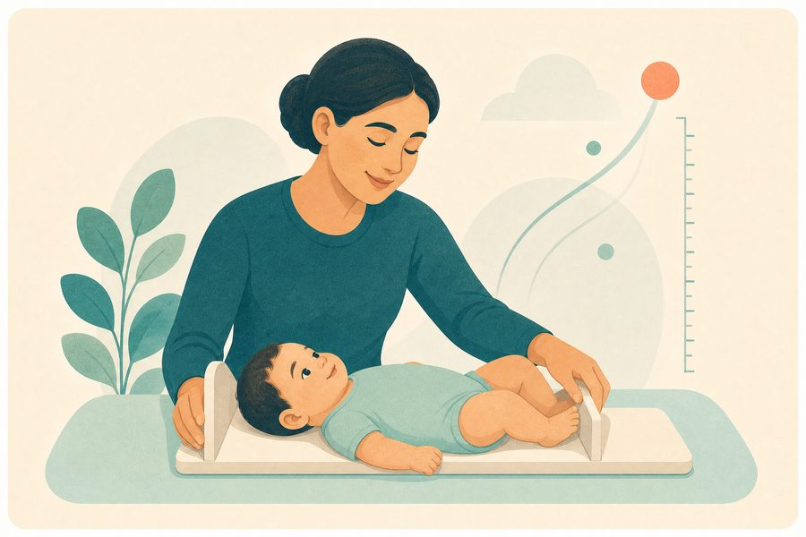
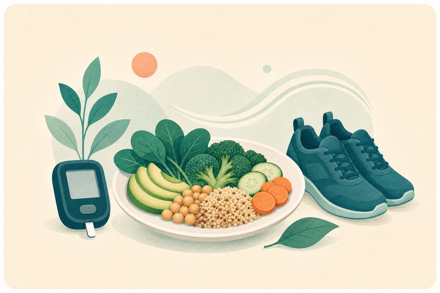

ما الفرق بين BMR وTDEE؟
فهم المصطلحين يساعدك على قراءة نتيجة الحاسبة بوعي.
اقرأ المقال ←استخدم حاسباتنا البسيطة لتقدير السعرات، مؤشر كتلة الجسم، وتوزيع الماكروز — بلغة عربية واضحة وبدون تعقيد.
تقديرات إرشادية وليست تشخيصًا طبيًا.
اكتب كلمة مثل «ماء»، «حمل»، «نوم» أو «BMI» للوصول إلى صفحة مناسبة داخل الموقع.
ابدأ بأداة واحدة، ثم كوّن صورة أشمل عن احتياجاتك وعاداتك الغذائية.

قدّر BMR وTDEE والسعرات اليومية حسب هدفك ومستوى نشاطك.
ابدأ الحساب ←احسب مؤشر كتلة الجسم وتعرّف على تصنيفه بطريقة مفهومة.
احسب BMI ←
حوّل سعراتك اليومية إلى جرامات من البروتين والكربوهيدرات والدهون.
وزّع ماكروزك ←
قدّر كمية الماء اليومية حسب الوزن ومستوى النشاط والطقس.
احسب احتياج الماء ←تعرّف على نطاق إرشادي للوزن حسب الطول والجنس.
احسب الوزن التقريبي ←جرّب الأدوات التي تساعدك على تحويل المعلومات الصحية إلى خطوات يومية بسيطة.
حاسبة الماء اليوميةقدّر احتياجك من الماء حسب الوزن والنشاط.حاسبة الوزن التقريبينطاق إرشادي مبسط حسب الطول والجنس.السعرات في الأطعمةابحث في قاعدة أطعمة عملية وسهلة القراءة.حاسبة الماكروزوزّع البروتين والكربوهيدرات والدهون بوضوح.الأدوات الصحيةاستكشف حاسبات صحية جديدة داخل الموقع.BMI للأطفالاقرأ المؤشر حسب العمر والجنس والمئينات.سعرات الحملقدّر الزيادة العامة حسب ثلث الحمل.
نمو الرضع والطولقارن القياس بمخططات WHO حسب العمر والجنس.اختبار التحكم بالربوفحص توعوي للتحكم بالأعراض.تقييم النومراجع نمط نومك خلال الشهر الماضي.
التوعية بالسكريقائمة يومية للمتابعة والعادات الصحية.صممنا الموقع ليكون نقطة بداية عملية، لا مصدرًا للقلق أو الأرقام المربكة.
الحسابات تتم في متصفحك ولا نطلب بيانات شخصية غير ضرورية.
خطوات قصيرة ونتائج كبيرة وواضحة على الهاتف والكمبيوتر.
مقالات مختصرة تساعدك على فهم الأرقام بدل التعامل معها كقواعد جامدة.
 أساسيات التغذية
أساسيات التغذية عادات يوميةتوازن الطبق
عادات يوميةتوازن الطبقالنتائج تقديرية مبنية على معادلات عامة، ولا تغني عن استشارة مختص مؤهل عند وجود حالة صحية أو هدف علاجي.
الحسابات تعمل محليًا في متصفحك. لا نحتاج إلى إنشاء حساب أو إرسال بياناتك الشخصية لإظهار النتيجة.